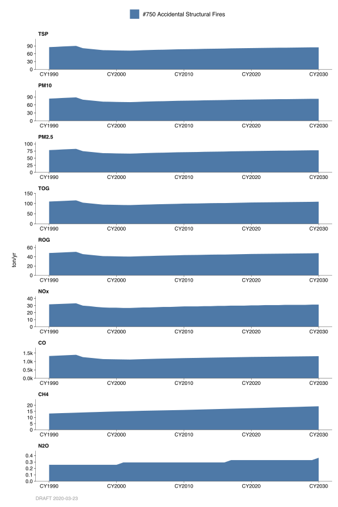
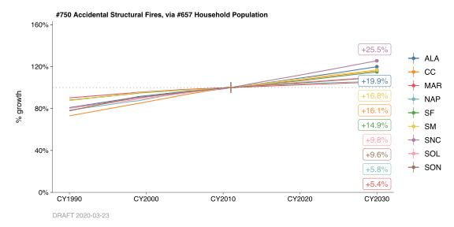

10.3 Accidental Structural Fires
10.3.1 Emissions
Introduction
Category 750 estimates criteria pollutant (particulate, organic, NOx, SOx, and CO) and greenhouse gas emissions (CO2, CH4, and N2O) from accidental structural fires. The Structural Fires category is an area source category that includes residential and commercial buildings as well as mobile and trailer home fires.
Methodology
The methods used to calculate emissions for this category conforms to the methods used by the California Air Resources Board (CARB). The total number of structural accidental fires in California was acquired from the State Fire Marshal’s Office. Structural fires were apportioned to the Bay Area based on number of households in the Bay Area as compared to total California households.
Structural losses. For building and mobile home fires, an average percent structural loss per fire was calculated by dividing the total monetary damage due to fires by the product of the average value of a residence in California and the number of residential fires. The result is an average loss of 7.3% per fire. According to census data and the National Association of Home Builders, the average residence has approximately 1,649 square feet of floor space and an average of 11,000 board feet of lumber in its structure. Assuming an average of one ton of material per 1000 board feet, an average residence would have approximately 11 tons of combustible material. With a rate of loss of 7.3%, the structural loss would be 0.80 tons per fire.
Content losses. The National Bureau of Standards lists the combustible contents per square foot of the functional areas of the average home. These figures were multiplied by the percent of fires originally estimated to occur within each of these areas, and the products were then added to give a weighted average of 7.91 lb/sq. ft. as shown in 10.6.
| Area |
Origin of Fires |
Combustible Material* |
Weighted Average* |
|---|---|---|---|
| Bedroom | 29% | 10.4 | 3.0 |
| Sleeping Area | 0.2% | 10.4 | 0.0 |
| Dining Area | 2.2% | 7.2 | 0.2 |
| Kitchen | 53.9% | 6.8 | 3.7 |
| Bathroom | 6.3% | 7 | 0.4 |
| Laundry | 8.1% | 7.2 | 0.6 |
| Office | 0.2% | 7.9 | 0.0 |
| Other | 0.1% | 9.6 | 0.0 |
| Total | 7.9 | ||
| * lb / sq. ft |
With a 7.3% loss rate and a factor of 7.91 pounds of combustible contents per square foot, and assuming an average floor space of 1300 square feet, the content loss for the average residential fire would be: \(1649 \times 0.073 \times 7.91 \div 2000\) = 0.48 (ton/fire).
\[ \begin{eqnarray} \text{Loss}_{total} &=& \text{Loss}_{structural} + \text{Loss}_{content} \\ &=& (0.80 + 0.48)\ \text{ton/fire} \\ &=& 1.28\ \text{ton/fire} \end{eqnarray} \]
Emission Factors
Structural fire emission factors in pounds per ton of material burned for TOG, CO and PM were obtained from the results of tests on the burning of model wood buildings. The emission factor for NOx was assumed to be similar to that listed in AP-42 for municipal refuse. These emission factors were converted to units of pounds per fire using the factor 1.28 ton/fire. The criteria pollutant composite emission factors (pound/fire) are as follow:
| category | PM | TOG | NOx | CO | CH4 | N2O | CO2bio |
|---|---|---|---|---|---|---|---|
| #750 Accidental Structural Fires | 21.1 | 27.1 | 7.8 | 327.6 | 5.67 | 0.1033 | 3760 |
The emission factors for greenhouse gas inventory were developed using above information and emission coefficient data from the Environmental Protection Agency (EPA), the U.S. Department of Energy’s (DOE’s) Energy Information Administration (EIA) and The California Energy Commission (CEC). The Greenhouse gas composite emission factors (pounds/fire) are as follow:
Carbon Dioxide emissions from this category are considered to be biogenic emissions. Biogenic Carbon Dioxide (Bio-CO2) emissions are a subset of total CO2 emissions which are emitted from materials that are derived from living cells, excluding fossil fuels, limestone and other materials that have been transformed by geological processes. Bio-CO2 originates from carbon that is present in materials such as wood, paper, vegetable oils and food, animal, and yard waste.
Temporal Variation
The monthly activity and the weekly activity are uniform. The daily activity occurs primarily during daylight hours.
County Distribution
Structural fires were apportioned to the Bay Area counties based on number of households in each county. Total number of households was used directly in the county distribution except for Solano and Sonoma which were adjusted to include only areas that are inside the District boundary.
| category | ALA | CC | MAR | NAP | SF | SM | SNC | SOL | SON |
|---|---|---|---|---|---|---|---|---|---|
| #750 Accidental Structural Fires | 20.9% | 14.9% | 3.8% | 1.9% | 12.9% | 9.8% | 23.1% | 5.6% | 7.1% |
10.3.2 Trends
History

Historical trends are based on data from the State Fire Marshal’s Office and household population growth trends in the Bay Area.
Growth
| category | backcast | forecast | profile |
|---|---|---|---|
| #750 Accidental Structural Fires | No | No | #657 Household Population |

Emissions growth profile is based on household population growth in the Bay Area. Household population data used in developing growth profile was obtained from the Association of Bay Area Government’s (ABAG’s) 2009 “Projections” reports.
By: Sukarn Claire Date: January 2014 Base Year: 2011